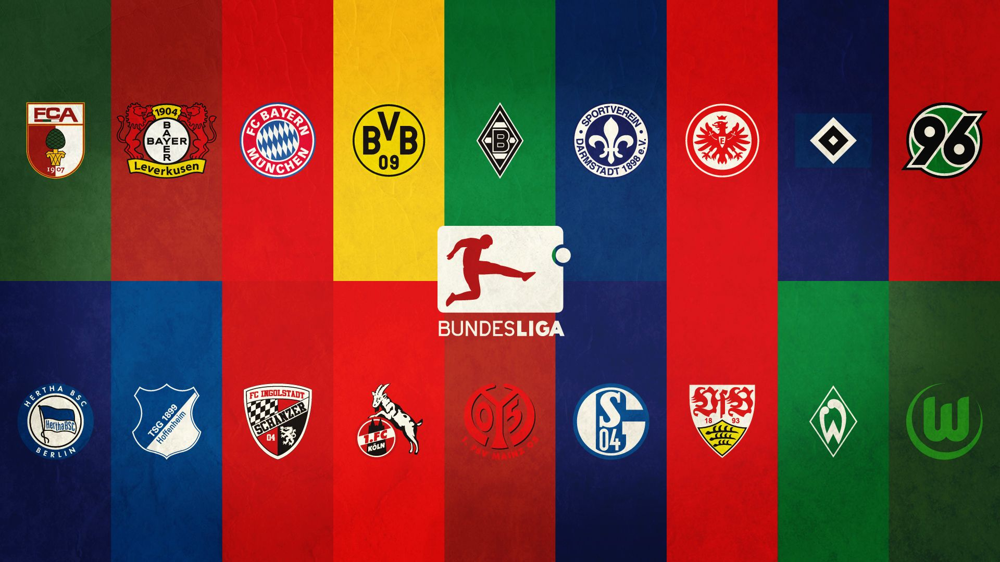
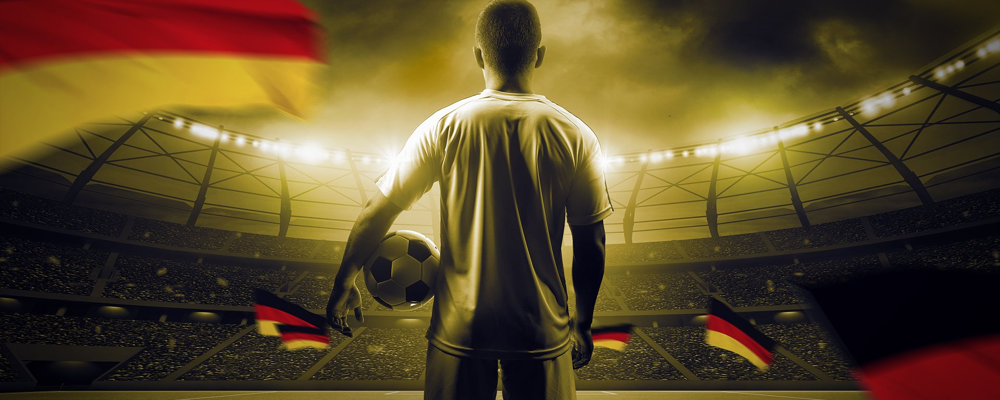

ogólne informacje na temat bundesligi
Bundesliga – najwyższa w hierarchii klasa męskich ligowych rozgrywek piłkarskich w Niemczech, będąca jednocześnie najwyższym szczeblem centralnym , utworzona w 1962 roku i zarządzana przez Niemiecki Związek Piłki Nożnej i Deutsche Fussball-Liga . Zmagania w jej ramach toczą się cyklicznie i przeznaczone są dla 18 najlepszych krajowych klubów piłkarskich. Jej triumfator zostaje Mistrzem Niemiec, zaś najsłabsze drużyny są relegowane do 2. Bundesligi.
Rekordowym mistrzem Bundesligi jest Bayern Monachium, który wygrywał ją 31-krotnie. Wielokrotni mistrzowie Bundesligi mają odznaczenia na strojach piłkarskich w postaci gwiazdek. Obecnie gwiazdki ma 6 zespołów: 5 gwiazdek – Bayern Monachium, 2 gwiazdki – Borussia Mönchengladbach, Borussia Dortmund, 1 gwiazdka – Hamburger SV, Werder Brema, VfB Stuttgart.
Obecny format ligi zakładający brak podziału na grupy obowiązuje od sezonu 1963/64.
Rozgrywki składają się z 34 kolejek spotkań rozgrywanych pomiędzy drużynami systemem kołowym. Każda para drużyn rozgrywa ze sobą dwa mecze – jeden w roli gospodarza, drugi jako goście. Od sezonu 1964/65 w lidze występuje 18 zespołów. W przeszłości liczba ta wynosiła 16. Drużyna zwycięska za wygrany mecz otrzymuje 3 punkty (do sezonu 1994/95 2 punkty), 1 za remis oraz 0 za porażkę.
Zajęcie pierwszego miejsca po ostatniej kolejce spotkań oznacza zdobycie tytułu Mistrzów Niemiec w piłce nożnej. Mistrz Niemiec, podobnie jak drużyna z drugiego i trzeciego miejsca zdobywa prawo gry w Lidze Mistrzów UEFA. Czwarta drużyna zdobywa prawo uczestniczenia w fazie Play-off Ligi Mistrzów. Piąta oraz szósta drużyna zdobywają możliwość gry w Lidze Europy UEFA. Również zwycięzca Pucharu Niemiec startuje w fazie grupowej Lidze Europy lub, w przypadku, w którym zdobywca krajowego pucharu zajmie miejsce w pierwszej czwórce – możliwość gry w eliminacjach do Ligi Europy otrzymuje również siódma drużyna klasyfikacji końcowej. Zajęcie 2 ostatnich miejsc wiąże się ze spadkiem drużyn do 2. Bundesligi, która od 1974 roku tworzy drugi najwyższy poziom rozgrywkowy w Niemczech. Trzeci zespół od końca, po zakończeniu rozgrywek rozgrywa mecze barażowe z trzecim zespołem 2. Bundesligi o pozostanie w lidze[1].
W przypadku zdobycia tej samej liczby punktów, klasyfikacja końcowa ustalana jest w oparciu o wynik dwumeczu pomiędzy drużynami, w następnej kolejności w przypadku remisu – różnicą bramek w pojedynku bezpośrednim, następnie ogólnym bilansem bramkowym osiągniętym w sezonie, większą liczbą bramek zdobytych oraz w ostateczności losowaniem.
